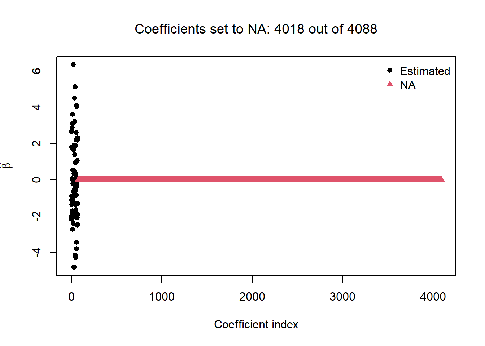
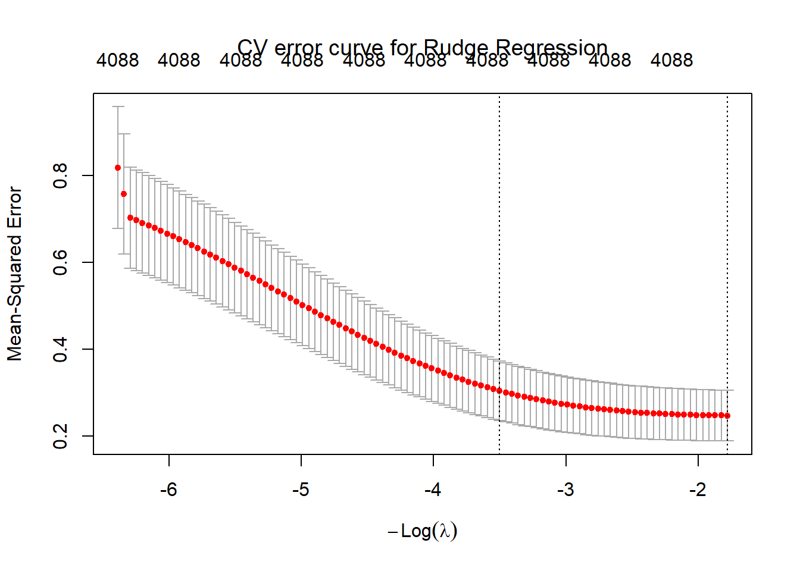
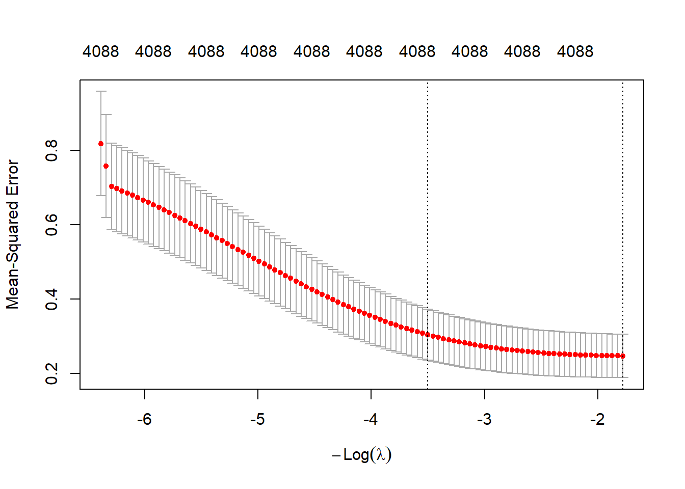
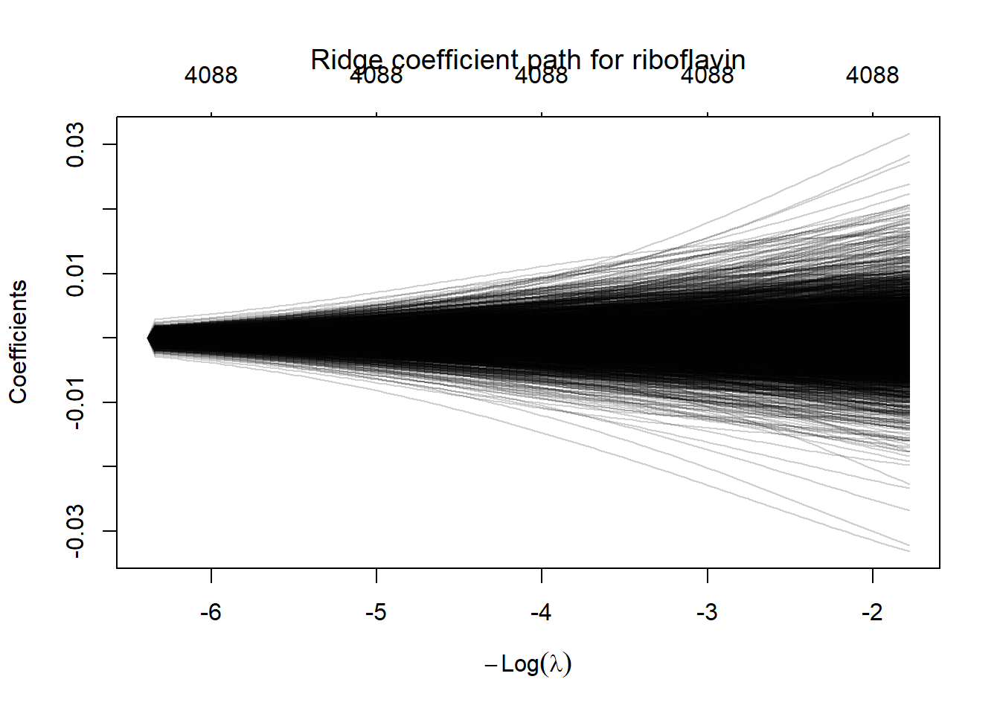
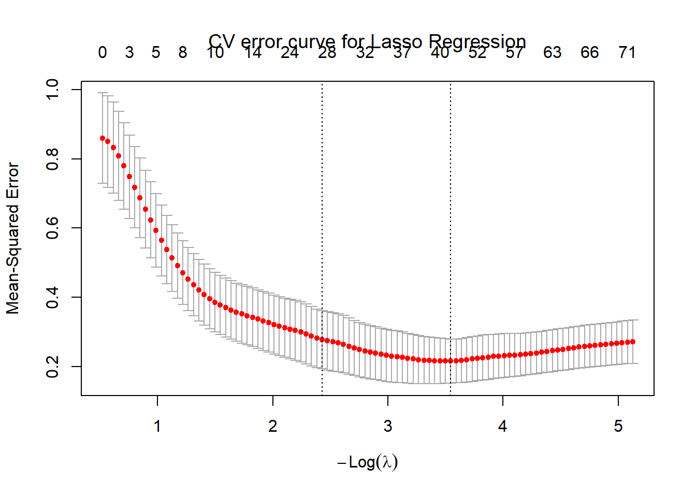
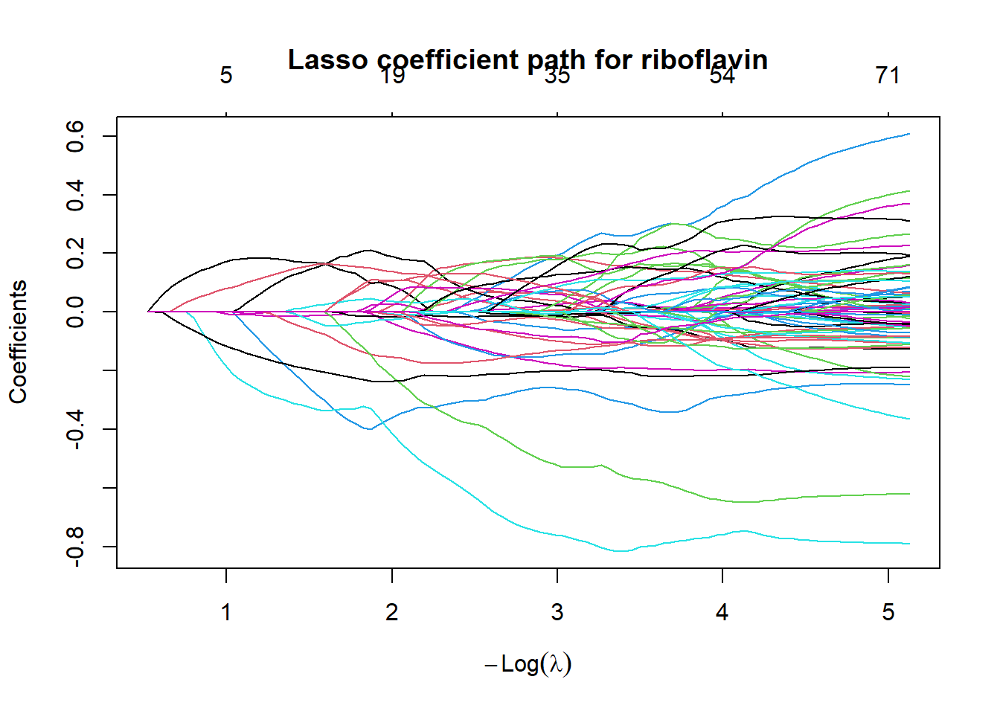
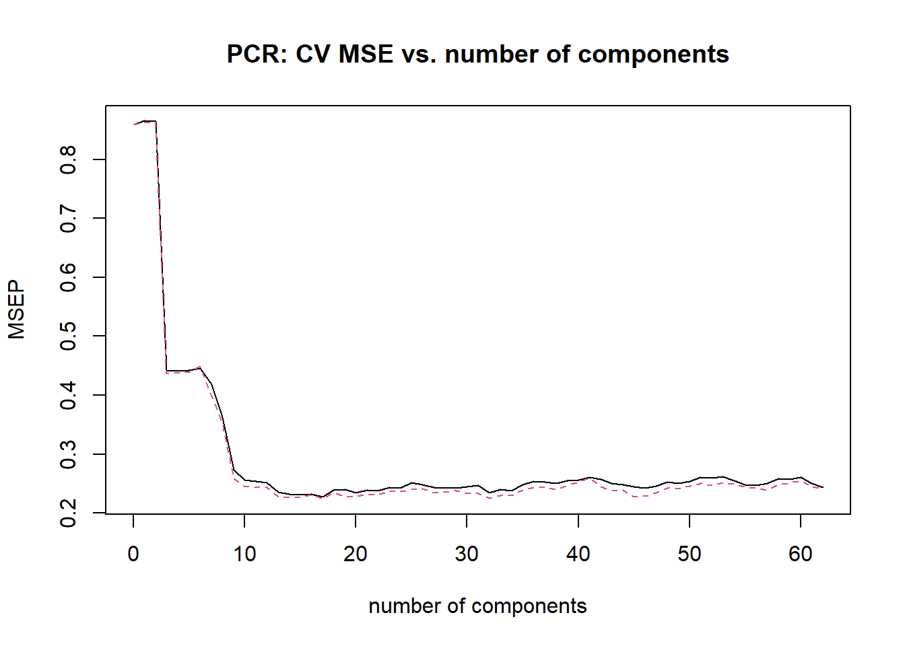

Loading the riboflavin dataset with \(n=71\) observations and \(p=4088\) predictors. This is an example of a rank-deficient problem since \(p > n\).
71 samples of B. subtilis, each with 4,088 gene expression features. The outcome is riboflavin (vitamin B2) production rate. Because \(p > n\), ordinary least squares fails — this is the setting where regularization is not optional.
riboflavin <-readRDS("riboflavin.rds")X <- riboflavin$x # 71 × 4088 matrix (predictor matrix X - multi column and multi row matrix)y <- riboflavin$y # length-71 vector (response vector y - single column and multi row matrix)c(n =nrow(X), p =ncol(X))
n p
71 4088
8.2 Problem 1:
Confirm that OLS cannot create a unique solution for this dataset. Attempt to fit a linear model using lm() and report what happens. How many coefficients does R return as NA, and why?
# converts the matrix X into a dataframe d1d1 <-as.data.frame(X)# add y as an extra column in the dataframe named yd1$y <- y # fit a linear model on the data (predict response y and using all columns in the datafraem d1 except the response y)lm1 <-lm(y ~ ., data = d1) # extract all the coefficients in the databeta_hat <-coef(lm1) # add a boolean mask where for coefficients which are not null (FALSE) and for coefficients which are null (TRUE)beta_na <-is.na(beta_hat) # replace every null coefficient with 0beta_hat[beta_na] <-0# plot each coefficient where coefficients are black dots and null coefficients are red trianglesplot(beta_hat, col = beta_na +1, pch =16+ beta_na, xlab ="Coefficient index", ylab =expression(hat(beta))) # add a legendlegend("topright", legend =c("Estimated", "NA"), pch =16:17, col =1:2, bty ="n")# add plot titlestitle(main =paste("Coefficients set to NA:", sum(beta_na), "out of", length(beta_hat) -1), font.main =1)

length(coef(lm1)) # total coefficients the model in R tried to estimate
[1] 4089
sum(is.na(coef(lm1))) # how many came back NA
[1] 4018
sum(!is.na(coef(lm1))) # how many were actually estimated
[1] 71
lm1$rank # rank of the design matrix the model in R used
[1] 71
max(abs(residuals(lm1))) # how big is the largest error?
[1] 0
summary(lm1)$r.squared # how well does it "fit"?
[1] 1
Interpretation:
Of all 4,088 coefficients for the predictors and 1 coefficient for the intercept (resulting in 4,089 total coefficients), 4,018 were null while only 71 had values. Because the design matrix is n x p where p > n, this means that there are more features/measurements than there are number of samples. So, there are infinitely many solutions. These solutions are the individual coefficients we are interested in. So, since there were 71 samples, the linear model returned 71 valid coefficients however, for the remaining 4,018, these coefficients were returned as null. This is called a lack of identifiability. The design matrix table is therefore considered singular (not invertible).
The plot highlights this as we see all 71 data points along the 0 coefficient index, this is because all linearly dependent columns were arbitrarily dropped depending on their order present in the data and set to 0 (These columns are said to be redundant since they are linearly dependent on another column).
8.3 Problem 2:
Fit ridge regression using glmnet (alpha = 0). Select \(\lambda\) via 10-fold cross-validation. Report \(\lambda_{\min}\) and \(\lambda_{1se}\). Plot the CV error curve with the two vertical lines. How does CV-MSE change as \(\lambda\) increases?
library(glmnet) # import rhe library for ridge and lasso regression
Warning: package 'glmnet' was built under R version 4.6.2
Loading required package: Matrix
Loaded glmnet 5.2
# set a seedset.seed(42) # fit ridge regression using 10-fold cross validation implimentationcv_ridge <-cv.glmnet(X, y, alpha =0, nfolds =10) # plot the CV error curveplot(cv_ridge) # title of plottitle(main =paste("CV error curve for Rudge Regression"), font.main =1)

c(lambda.min =round(cv_ridge$lambda.min, 4), # the penalty term λ with the lowest average CV error lambda.1se =round(cv_ridge$lambda.1se, 4)) # the penalty term λ with the highest average CV error whose error is still within one standard error of that minimum
lambda.min lambda.1se
5.9342 33.1768
Interpretation/Observation:
As the penalty term λ increases, the CV-MSE change decreases as the curve begins to flatten out for larger λ. Using the 10-fold cross validation yieled a lowest average CV error penalty term λ.min of 5.9342 and a heighest average CV error penalty term λ.1se of 33.1768.
8.4 Problem 3:
Plot the ridge coefficient path \(-\log(\lambda)\) (a previous version omitted the negative sign) on the x-axis, coefficient values on the y-axis. Describe qualitatively what happens to the coefficients as \(\lambda\) increases. Does any coefficient reach exactly zero?
Method #1:
library(glmnet)ridge_fit <-glmnet(X, y, alpha =0) # fit ridge regression# returns the coefficients for every λ. Converts it into matrix table. Drops inctercept roq, so jus tleft with coefficients/weigths. one row per gene, one column per λbeta_path <-as.matrix(coef(ridge_fit))[-1, ] # puts λ values on a log scale, and the minus sign flips it to −log(λ)neg_log_lambda <--log(ridge_fit$lambda)# plot the ridge coefficient pathmatplot(neg_log_lambda, t(beta_path), type ="l", lty =1,col ="#00000040",xlab =expression(-log(lambda)), ylab ="Coefficient",main ="Ridge coefficient path for riboflavin")abline(h =0, lty =2)

Method #2:
library(glmnet)# fit the ridge regression modelridge_fit <-glmnet(X, y, alpha =0)# plot the ridge coefficient pathplot(ridge_fit, xvar ="lambda", label =FALSE,main ="Ridge coefficient path for riboflavin", col ="#00000030", font.main =1)

# sum of any coefficient which exactly equals 0 (we except none of them to equal 0)sum(beta_path ==0)
[1] 0
Interpretation:
The plot shows that as the penatly term λ increases, the coefficients are shrunken and pulled towards zero. However, none of them ever actually reach zero. This can be verified by the result from the sum(beta_path == 0) where no coefficients actually reached zero. Therefore, there are 4,088 coefficietns which are non-zero but most will be near zero.
8.5 Problem 4:
Fit lasso regression (alpha = 1) and select \(\lambda\) via 10-fold CV. At \(\lambda_{1se}\), how many gene expression features are retained (non-zero coefficients)? Plot the coefficient path and the CV error curve.
library(glmnet)# set a seedset.seed(42) # fit lasso regression using 10-fold cross validation implimentationcv_lasso <-cv.glmnet(X, y, alpha =1, nfolds =10) # plot the CV error curveplot(cv_lasso) # title of plottitle(main =paste("CV error curve for Lasso Regression"), font.main =1)

c(`lambda.min`=round(cv_lasso$lambda.min, 4), # the penalty term λ with the lowest average CV error `lambda.1se`=round(cv_lasso$lambda.1se, 4)) # the penalty term λ with the highest average CV error whose error is still within one standard error of that minimum
lambda.min lambda.1se
0.0289 0.0881
# sum of the non-zero coefficients remain at penalty term with the highest average CV errorn_selected <-sum(coef(cv_lasso, s ="lambda.1se") !=0) -1# subtract interceptc(`Non-zero gene expression features of 4,088 at lambda.1se`= n_selected)
Non-zero gene expression features of 4,088 at lambda.1se
27
library(glmnet)# fit the lasso regression modellasso_fit <-glmnet(X, y, alpha =1) # plot the lasso coefficient pathplot(lasso_fit, xvar ="lambda", label =FALSE,main ="Lasso coefficient path for riboflavin")

Interpretation:
Using the 10-fold cross validation yieled a lowest average CV error penalty term λ.min of 0.0289 and a heighest average CV error penalty term λ.1se of 0.0881. The CV error curve shows the CV-MSE change decreases near the lowest average CV error penalty term λ.min then begins to flatten up until the heighest average CV error penalty term λ.1se where the CV-MSE change begins to increase. At the heighest average CV error penalty term λ.1se, of the 4,088 gene expression features, 27 were non-zero coefficients reaminging while all other coefficients were set equal to zero. The lasso coefficient path shows coefficients of the genes entering the model one at a time as λ decreases. Thus, as λ decreases, coefficients of the genes switch on one at a time and their coefficients leave the zero line. Inversely, as λ increases, coefficients of the genes move towards where the weak/redundant coefficients equal exactly zero and important coefficients are near zero. Since 27 < 71, regular OLS can now be applied and gives a unique answer using a relaxed lasso.
8.6 Problem 5:
Fit an elastic net with \(\alpha \in \{0.25, 0.5, 0.75\}\). For each \(\alpha\), record the minimum CV-MSE. Create a small table showing \((\alpha, \lambda_{\min}, \min \text{CV-MSE})\). Which \(\alpha\) yields the lowest CV-MSE? How does the number of selected features compare to lasso?
alphas <-c(0.25, 0.5, 0.75) # build sequence of alphas for elastic net with values from 0.25, 0.5, 0.75# for every alpha value in the seqeuence of alphas, fit an elastic net using cross validation for all alpha valuesen_fit <-lapply(alphas, function(a) { set.seed(42) # set random seed 42 cv <-cv.glmnet(X, y, alpha = a, nfolds =10) # run a elastic net with cross validation implimentation using every alpha value})# insert results into a dataframe with columns for alpha, lambda_min, and min_CV_MSEen_table <-data.frame(alpha = alphas,lambda.min =sapply(en_fit, function(cv) round(cv$lambda.min, 4)),min_CV_MSE =sapply(en_fit, function(cv) round(min(cv$cvm), 4)))print(en_table)
# find the best alpha from your tableen_table_best <- en_table[which.min(en_table$min_CV_MSE), ]en_table_best
alpha lambda.min min_CV_MSE
3 0.75 0.0403 0.2197
# refit elastic net at that alpha (same seed, so same folds)set.seed(42)cv_en <-cv.glmnet(X, y, alpha = en_table_best$alpha, nfolds =10)# sum of non-zero gene coefficientscount_nz <-function(cv, s) sum(as.matrix(coef(cv, s = s))[-1, ] !=0)# compare with lasso (cv_lasso from Problem 4)data.frame(model =c("Lasso", paste("Elastic net, alpha =", alphas)),nonzero_at_lambda.min =c(count_nz(cv_lasso, "lambda.min"),sapply(en_fit, count_nz, s ="lambda.min")),nonzero_at_lambda.1se =c(count_nz(cv_lasso, "lambda.1se"),sapply(en_fit, count_nz, s ="lambda.1se")))
An alpha of 0.75 yields the lowest CV-MSE of 0.2197. At alpha values of 0.25, 0.5, and 0.75, the min_CV_MSE values are 0.2238, 0.2261, and, 0.2197 respectively. AT lambda.1se, the lasso retains 27 features (27 non-zero coefficients). However, the elastic net at alpha values of 0.25, 0.5, and 0.75, have lambda.1se values of 66, 39, and 32 respectively. The elastic net retains more features compared to lasso since the elastic net blends in a ridge penalty with a lasso penalty. So, the ridge penalty shrinks weights towards zero but not does have them equaling to zero, so their corresponding features are still retained in the model. Recall that for the lasso penalty, the weaker weights are set equal to zero and thus, their corresponding features are dropped from the model. The ridge part introduces a grouping effect so correlated genes tend to share the weight and get similar coefficients. So, weights are kept or dropped together instead of one being picked arbitrarily. Therefore,
8.7 Problem 6:
Fit PCR using the pls package (or manual SVD as shown in the chapter). Select the number of components \(k\) via cross-validation (use validationplot). Report the optimal \(k\).
Method #1:
# Selecting via cross-validation# import the pls packagelibrary(pls)
Attaching package: 'pls'
The following object is masked from 'package:stats':
loadings
# set random seedset.seed(42) # fit the PCR model for every number of components from 1 up to the maximum allowed, and run cross validation at each onepcr_fit <-pcr(y ~ X, validation ="CV") # plot the CV mean squared error of prediction against the number of componentsvalidationplot(pcr_fit, val.type ="MSE",main ="PCR: CV MSE vs. number of components")

# pulls out the CV error numbers, one for each number of components, starting from 0 components (an intercept-only model)msep_cv <-MSEP(pcr_fit)$val["CV", 1, ]# find optimal k by identiyfing the position of the smallest error. The - 1 is needed because that first entry is 0 components, so position 1 means k = 0, position 2 means k = 1, etc.k_opt <-which.min(msep_cv) -1c(`Optimal number of components`= k_opt)
Optimal number of components.17 comps
17
Interpretion:
The dips in the validation plot shows that error falls as useful components are added, then rises or flattens as extra components just fit noise. The bottom of the dip marks the optimal k. The plot shows the optimal k is in the range between 10 and 20. The actual optimal number of principal components k is 17.
Method #2:
Xc <-scale(X) # center the genessv <-svd(Xc) # apply singular value decomposition to X_cVk <- sv$v[, 1:k_opt] # first k directions (4088 x k)Z <- Xc %*% Vk # principal components (71 x k)gamma_hat <-coef(lm(y ~ Z))[-1] # fit PCR and retrieve the estimated gamma coefficients (weights) for k principal componentsbeta_manual <- Vk %*% gamma_hat # back-transform to 4088 weights
Back-transform the PCR fit to obtain the full 4,088-dimensional coefficient vector \(\hat{\beta}^{\text{PCR}}\).
# Under the hood, does back-transformation. The regression gave k weights (one per principal component) # Each component is a mix of all the genes, so multiplying through gives one weight per gene: β̂_PCR = V_k γ̂# where V_k holds the component directions and the gamma coefficients (weights) γ̂ beta_pcr <-drop(coef(pcr_fit, ncomp = k_opt))length(beta_pcr) # should return 4,088
[1] 4088
Use \(\hat{\beta}^{\text{PCR}}\) to generate a prediction for the first observation in the dataset (X[1, ]). Show your R code and the predicted value.
# PCR works with centered data, so the model is: prediction = ȳ + (x − x̄)ᵀβ̂x_bar <-colMeans(X) # the average of each gene across the 71 samplesy_bar <-mean(y) # the average response# predict the first observationpred1 <- y_bar +sum((X[1, ] - x_bar) * beta_pcr)pred1
[1] -6.651018
# predict the first observation using pls packagepredict(pcr_fit, ncomp = k_opt)[1, 1, 1]
[1] -6.651018
In one sentence, explain why you needed all 4,088 gene expression values to generate this prediction even though you only fit \(k\) principal components.
Each principal component is a weighted combination of all 4,088 genes, so the k fitted component weights map back to a nonzero coefficient on every gene, and computing a prediction requires the full 4,088-gene vector. In back-transformation to go from \(\hat{\gamma_k}\) to \(\hat{\beta}^{\text{PCR}}\), it spreads the shrinkage across all original predictors which are the coefficient vector has non-zero entries. To generate a prediction for a new observation, you must still measure all 4,088 original variables.
8.8 Problem 7:
Comparing across methods:
Report the CV-MSE at the selected tuning parameter for each of the four methods (ridge, lasso, elastic net, PCR).
Which method achieves the lowest CV-MSE on this dataset?
The lasoo regression method achieved the lowest CV-MSE value of 0.2159. Lasso regression beats the elastic net with an alpha value of 0.75 by only about 0.004, which is under 2%. Ridge rergession performed the worst as it is about 0.03 higher than lasso regression. However, the relative difference between all methods is marginal.
Importnot caveat: these methods were not cross-validated on identical folds. Both glmnet and pls use random 10-fold splits, but they split differently, and glmnet standardizes the genes internally while the default pcr() does not. So small gaps between methods may just reflect these differences.
Based on the guidance in the chapter, would you expect ridge or lasso to work better here? Does the data agree with your expectation? Why or why not?
Based on the guidance from the chapter, I would expect that lasso regression to form the best because it handles the case where the number of features are greater than the number of observatiosn (p > n) by shrinking weaker weights to be exactly 0 while shrinking stronger weights near but not exactly 0. other methods such as ridge regression still retain all weights which are skrank near 0 but never exactly 0. So, the model must still be fit using all features. Elastic net is a combination of lasso and ridge so we expect for this method to retain more features than lasso but less that ridge. Principal comonent regression did not perofrm the best likely because it builds k components from the features (genes) alone. Each component is a direction in which the features (genes) vary the most. It never asks whether that direction helps predict riboflavin production.